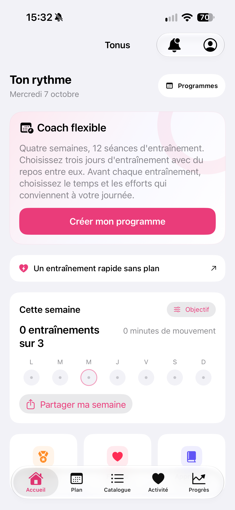

Par Nikita Revin, développeur de Tonus · 28 octobre 2026
Durée prévue, repos, pauses et arrondi : comment lire les minutes du résultat et le total de la semaine dans Tonus.
Vous choisissez une séance de 5, 10 ou 20 minutes, puis vous retrouvez une durée dans le résultat. Ces nombres ont des rôles différents : le premier décrit le format prévu ; le second vient du temps écoulé pendant la séance dans l’app. Voici ce qui entre dans ce calcul.
La durée choisie décrit le contenu prévu
Dans le programme flexible, le choix de 5, 10 ou 20 minutes sert à préparer la séance. Les exercices et les repos composent ce format. Pendant la séance, vous pouvez mettre le minuteur en pause ou utiliser les commandes disponibles, par exemple pour passer un repos.
Le temps entre l’ouverture de l’app et la fermeture de l’écran de résultat peut donc être plus long que la durée enregistrée. Le résultat utilise le temps de la séance lancée, en tenant compte de son déroulement.
Le repos programmé compte, la pause suspend le compteur
Un repos entre deux exercices fait partie du temps de séance. Le bouton Pause sert, lui, à interrompre le décompte. Quand vous reprenez, le compteur repart ; le temps passé en pause n’est pas ajouté à la durée enregistrée.
Si vous vous interrompez pour répondre à un appel ou chercher du matériel, utilisez Pause. En laissant la séance active au premier plan, vous laissez aussi son temps s’écouler. Passer un repos peut, à l’inverse, raccourcir la durée finale.
Quand une étape chronométrée arrive à son terme en arrière-plan, l’app attend une confirmation avant de poursuivre. Le temps d’attente après cette limite n’est pas ajouté comme si les exercices suivants avaient été effectués. Au retour, lisez l’état affiché avant de continuer.
Le résultat arrondit à la minute supérieure
À la fin, validez l’évaluation de difficulté pour enregistrer la séance. Tonus transforme le temps compté en minutes entières et l’arrondit à la minute supérieure, avec un minimum d’une minute pour une séance terminée.
Exemple de calcul : un temps compté de 4 minutes et 10 secondes donne 5 minutes enregistrées. Cet exemple illustre l’arrondi ; il ne provient pas d’une séance mesurée sur une personne.

Une fois la dernière étape terminée, rester sur les écrans de fin n’allonge pas le temps de séance. Le résultat enregistré garde sa durée.
Le total de la semaine additionne les résultats enregistrés
La carte Cette semaine affiche le nombre de séances enregistrées et leurs minutes. L’arrondi se fait pour chaque séance, avant l’addition hebdomadaire. Le total peut donc différer d’un arrondi effectué une seule fois sur toutes les secondes de la semaine.

Le libellé « minutes de mouvement » de cette carte reprend le temps calculé dans l’app, repos programmés compris. Pour comprendre un écart, regardez les séances enregistrées, les pauses et les repos passés. L’historique local reste utilisable sans activer Apple Santé.
Ce guide décrit Tonus 1.4 pour iPhone sous iOS 17 ou une version ultérieure. L’accès est gratuit, sans compte, abonnement ni achats intégrés. Les plans et les consignes écrites fonctionnent hors ligne. Les vidéos en ligne nécessitent une connexion ; les services externes peuvent afficher des publicités. La connexion à Apple Santé est facultative.